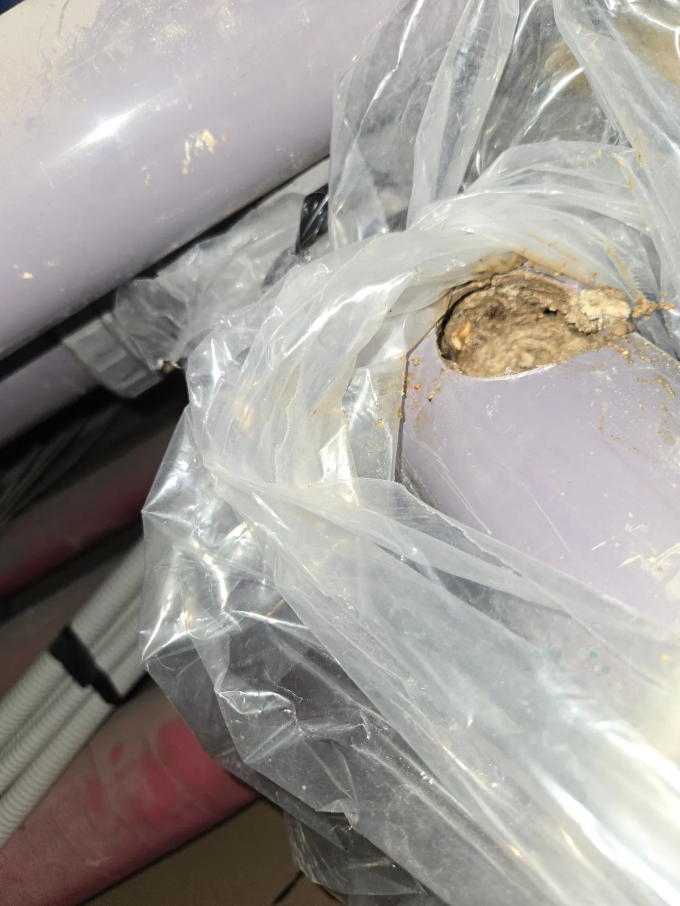
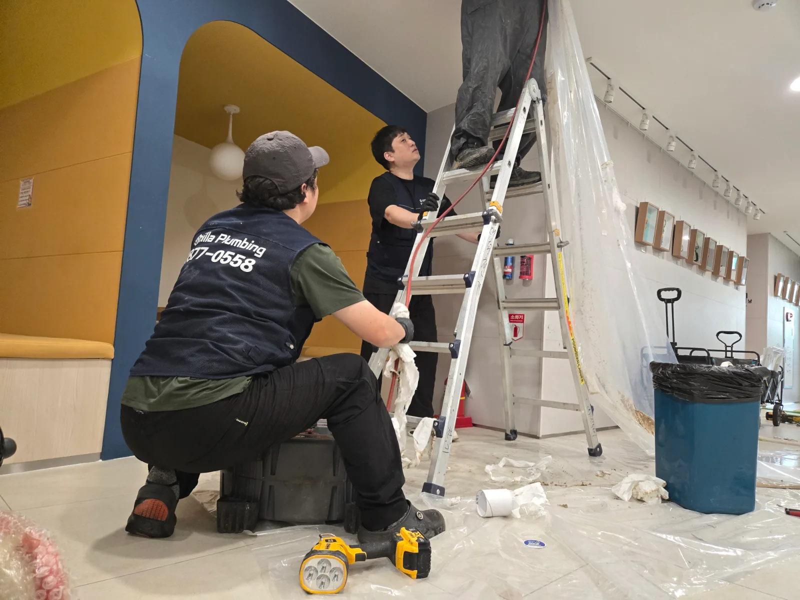

강남구 삼성동 하수구막힘, 현장 도착 후 진단
강남구 삼성동 관공서에서 하수구가 심하게 막혔다는 요청을 접수한 신라건축설비는 천장 작업과 배관막힘 제거에 필요한 장비를 준비해 신속하게 현장으로 출동했습니다. 다수의 이용자가 사용하는 관공서는 배수시설의 사용량이 많아 문제가 확대되기 전에 정확한 막힘 위치를 찾아야 합니다. 숙련된 하수구막힘 전문 기술자가 배수 증상과 배관의 진행 방향을 점검한 결과, 바닥 배수구가 아닌 천장 내부의 횡주 하수배관에 이물질이 축적됐을 가능성이 높았습니다. 일반적인 입구 관통으로는 정확한 상태를 확인하기 어려워 배관에 직접 접근하는 천장 작업을 진행했습니다.
1단계: 증상 확인과 필요한 장비 작업
먼저 작업 중 오수와 이물질이 실내로 퍼지지 않도록 바닥과 벽면, 집기 주변을 비닐로 충분히 보양했습니다. 작업자 두 명이 사다리와 장비를 안전하게 배치한 뒤 천장 내부 하수배관의 위치를 확인했습니다. 배관 아래에는 오염물 회수용 비닐과 용기를 설치하고, 막힘이 집중된 지점에 필요한 크기의 작업구를 타공했습니다. 배관을 개방하자 내부 공간이 단단하게 굳은 이물질로 거의 가득 차 있어 물이 통과하기 어려운 상태가 직접 확인됐습니다.

2단계: 원인 구간 처리와 정상 작동 확인
타공한 작업구를 통해 배관 내부를 가득 막고 있던 굳은 이물질과 슬러지를 조금씩 분쇄해 밖으로 제거했습니다. 단순히 중앙에 작은 구멍만 뚫는 데 그치지 않고 배관의 흐름을 방해하는 오염물을 작업 가능한 범위까지 정리해 내부 단면을 확보했습니다. 천장 배관 작업은 제거 과정에서 오수와 이물질이 한꺼번에 쏟아질 수 있으므로 작업자들이 배관 상태와 회수 자재를 함께 관리하며 안전하게 진행했습니다. 물길을 확보한 후 충분한 양의 물을 흘려보내 배수 속도와 잔존 막힘 여부를 확인하고, 타공한 배관 부위를 보수해 작업을 마무리했습니다.

작업 결과와 재발 방지 안내
배관 내부를 가득 채웠던 단단한 이물질을 제거한 결과 정체됐던 물이 정상적으로 배출되고 하수구막힘 증상도 해소됐습니다. 관공서·상가·빌딩처럼 사용 인원이 많은 시설은 배관 내부에 오염물이 빠르게 축적될 수 있습니다. 여러 배수구에서 동시에 물 빠짐이 느려지거나 악취와 역류가 반복된다면 개별 배수구 문제가 아니라 천장 횡주관이나 공용배관막힘일 가능성도 확인해야 합니다. 막힘이 심해지기 전에 정기적인 배관 점검과 세척을 진행하면 대규모 역류와 천장 누수 피해를 줄일 수 있습니다.
신라건축설비는 강남구 삼성동을 비롯한 서울 전 지역과 경기권에 신속하게 출동하여 하수구막힘·공용배관막힘·오수관막힘을 전문적으로 해결합니다. 배수구 입구의 단순 관통뿐 아니라 배관 내시경검사, 석션, 샤프트, 고압세척과 천장 내부 배관 타공작업을 현장 상황에 맞춰 적용합니다. 관공서·상가·빌딩 등 대형 시설의 배관 진단부터 막힘 제거, 배관 보수·교체공사까지 여러 업체를 따로 부르지 않고 자체적으로 대응할 수 있습니다.
최종 조치: 작업 구간의 바닥과 벽면을 비닐로 보양한 후 천장 내부 하수배관에 접근했습니다. 막힘이 집중된 배관을 부분 타공해 내부 상태를 확인하고 단단하게 축적된 이물질을 제거했습니다. 배관 내부의 물길을 확보한 뒤 통수검사를 진행하고 타공 부위를 안전하게 보수했습니다.
현장 방문 전 확인하는 비용과 작업 범위
신라건축설비는 현장 증상과 배관 구조를 확인한 뒤 필요한 작업과 예상 비용을 안내합니다. 단순 관통으로 해결되는지, 배관내시경·석션·고압세척 또는 추가 장비가 필요한지는 현장 상태에 따라 달라집니다. 출장비와 야간 작업비, 추가 장비 비용이 발생할 수 있는 경우 작업 전에 먼저 설명하고 동의를 받은 범위에서 진행합니다.
업체를 선택할 때 확인할 사항
무조건적인 ‘0원’ 표현보다 실제 작업 범위, 추가 비용 조건, 사용 장비와 사후 대응 기준을 확인하는 것이 중요합니다. 해결되지 않았을 때의 비용 기준과 작업 후 동일 증상 발생 시 점검 범위를 사전에 문의해두면 불필요한 분쟁을 줄일 수 있습니다.
강남구 하수구막힘 자주 묻는 질문
여러 배수구가 동시에 역류하면 공용배관 문제인가요?
관공서 내부 배수시설의 물이 원활하게 빠지지 않고 배수 불량이 반복됐습니다. 일반적인 배수구 입구 작업으로는 해결되지 않았으며, 천장 내부에 설치된 배관 깊은 구간이 막혀 시설 전체의 배수 흐름에 영향을 줄 수 있는 상태였습니다.처럼 증상이 나타나더라도 원인은 현장마다 다를 수 있습니다. 장비와 배관 구조를 확인한 뒤 필요한 작업 범위를 안내합니다.
고압세척이 항상 필요한가요?
작업 전 증상과 현장 여건을 확인해 예상 범위와 비용을 먼저 안내합니다. 변기 탈거, 장비 추가 투입 또는 공용배관 작업이 필요한 경우 고객 동의 없이 임의로 진행하지 않습니다.
작업 전 추가 비용을 확인할 수 있나요?
완료 후 정상 작동을 함께 확인하고 작업 범위에 따른 사후 안내를 드립니다. 동일 증상이 반복되면 현장 기록을 기준으로 원인을 다시 점검합니다.
하수구막힘 서울·경기 출동지역
신라건축설비는 강남구 삼성동 현장을 포함해 서울 25개 구와 경기도 31개 시·군의 배관 문제를 상담합니다. 현장 거리와 기사 배정 상황에 따라 출동 가능 여부를 먼저 안내드립니다.
서울 전 지역
강남구 · 강동구 · 강북구 · 강서구 · 관악구 · 광진구 · 구로구 · 금천구 · 노원구 · 도봉구 · 동대문구 · 동작구 · 마포구 · 서대문구 · 서초구 · 성동구 · 성북구 · 송파구 · 양천구 · 영등포구 · 용산구 · 은평구 · 종로구 · 중구 · 중랑구
경기도 주요 출동지역
수원시 · 용인시 · 고양시 · 화성시 · 성남시 · 부천시 · 남양주시 · 안산시 · 평택시 · 안양시 · 시흥시 · 파주시 · 김포시 · 의정부시 · 광주시 · 하남시 · 광명시 · 군포시 · 양주시 · 오산시 · 이천시 · 안성시 · 구리시 · 의왕시 · 포천시 · 양평군 · 여주시 · 동두천시 · 과천시 · 가평군 · 연천군